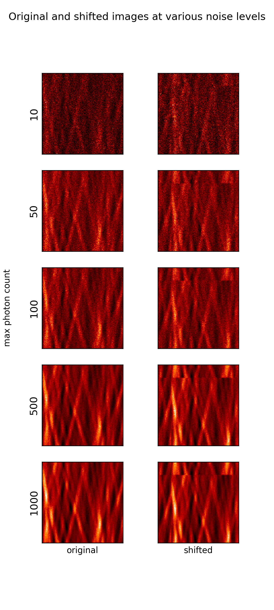

Single-step DFT subpixel registration under Poisson noise 2019-04-18 pairs of images that will be used to test registration Coarse and fine correlation maps. Coase is over a 160x160 region (the whole image), while fine is over a single pixel Max photon count offset error (px) 10 0.55 50 0.27 100 0.20 500 0.09 1000 0.07